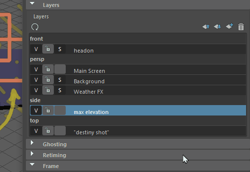
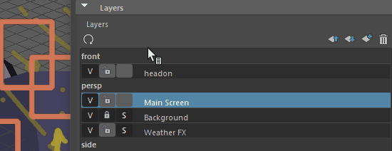
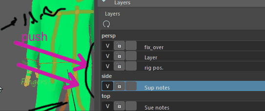

打开 Blue Pencil 层管理器
- 使用 Blue Pencil 时，双击工具箱(Tool Box)的“上次使用的工具”(Last Used Tool)区域中的“Blue Pencil”图标
 ，然后向下滚动到 Blue Pencil 工具设置(Blue Pencil tool settings)的“层”(Layers)部分。
，然后向下滚动到 Blue Pencil 工具设置(Blue Pencil tool settings)的“层”(Layers)部分。
Blue Pencil 层管理器可用于在摄影机之间创建、删除、隐藏、重新排列和移动层。
每当使用 Blue Pencil 在视口中绘制时，都会在当前摄影机视图上创建一个帧（有关 Maya 摄影机工作方式的说明，请参见摄影机设置(Camera Setup)）。但是，使用 Blue Pencil，每个摄影机可以有多个“层”(Layers)，这样可以分离不同的图像并堆叠它们。
注： 本主题介绍 Blue Pencil 层管理器中包含的“设置”(settings)。有关使用 Blue Pencil 层管理器的信息，请参见管理 Blue Pencil 层(Manage Blue Pencil Layers)。
层
高亮显示的层是“活动”层，可以在其中绘制。高亮显示层的帧显示在时间滑块上。
层按照其指定到的摄影机进行组织。层的显示顺序就是它们在视口中的绘制顺序，例如，位于层管理器顶部的层是视口中的顶层。
使用层管理器顶部的“上移/下移”(Move up/down)图标可以对层重新排序。
| 图标 | 功能 |
|---|---|
 |
清除并重建摄影机列表和层。 |
 |
在 Blue Pencil 层管理器中上移选定层。请参见管理 Blue Pencil 层。 |
 |
在 Blue Pencil 层管理器中下移选定层。请参见管理 Blue Pencil 层。 |
 |
创建图层。 |
 |
从表中移除层。 |
| 锁定层(Lock Layer) | 单击以防止在层上进行编辑。 |
| 取消锁定层(Unlock Layer) | 单击以允许在层上进行编辑。 |
| 静态(Static) | 单击以将选定层设置为“静态”(Static)。“静态”(Static)层在整个动画中保持不变，适合用作背景面板，无论当前时间如何，这些面板在整个过程中都会持续存在。静态状态对所有笔划使用单帧
如果层未设置为“静态”，则视为已设置动画。“已设置动画”状态对于与动画相关的任务（如阻塞和查看）非常有用。 |
| 可见(Visible) | 单击以在视口中显示或隐藏选定层中的图形。 |
层特性
在层管理器中的层上单击鼠标右键以打开“层特性”(Layer Properties)对话框，用于修改选定层的设置。

如果在层上单击鼠标右键，可以执行下列操作：
- 重命名层
- 将层重新指定给新摄影机
- 锁定层以防止编辑
- 设置层可见性
- 将层状态从“已设置动画”(Animated)更改为“静态”(Static)
如果在特定摄影机的标题上单击鼠标右键，例如“前”(Front)或“透视”(Persp)，可以将指定给该摄影机的所有层移动到另一个摄影机。
- 删除层
-

“层”(Layers)标签
- 也可以单击表顶部的“层”(Layers)标签，然后从以下选项中进行选择：
-
选项 行为 删除活动层(Delete Active Layer) 从层管理器中移除高亮显示的层及其内容。 删除活动摄影机层(Delete Active Camera Layer) 移除指定给摄影机的所有层，例如“透视”(Persp)。 全部删除(Delete All) 从层管理器中移除所有内容。 - 摄影机层特性
-
删除指定给摄影机的所有层
“摄影机”(Camera)标签
在“Blue Pencil”层管理器中的摄影机名称上单击鼠标右键，然后选择“从 <x> 摄影机中删除层”(Delete Layers from <x> Camera)。